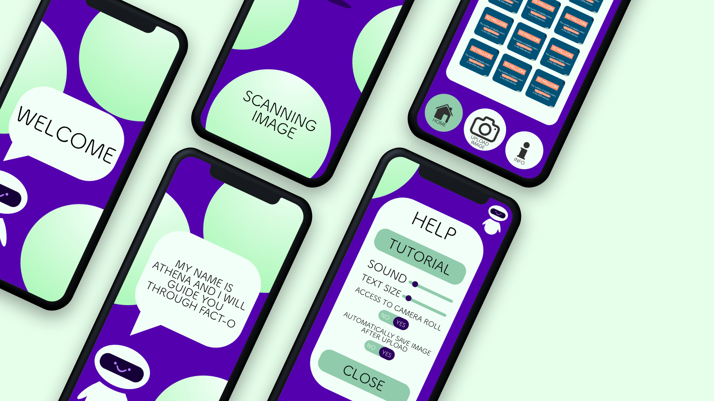
Fact-O
-
Role:
-
UX Researcher
-
Timeline:
-
Aug. 2020 - Oct. 2020
-
Skills:
-
User Research, Prototyping
-
Tools Used:
-
Balsamiq, Sketch, Bootstrap
In my Human-Computer Interaction course, we were tasked with creating a mobile application that builds mental or physical resilience. My partner and I decided to focus on mental resilience and create an app to combat misinformation. Fact-O gives users the power to fact check information they find on social media.
The Problem
In today's day and age, information spreads faster than ever. Many of us are constantly bombarded with new information every time we open social media and it has become harder to differentiate fact from fiction.
The Design Process
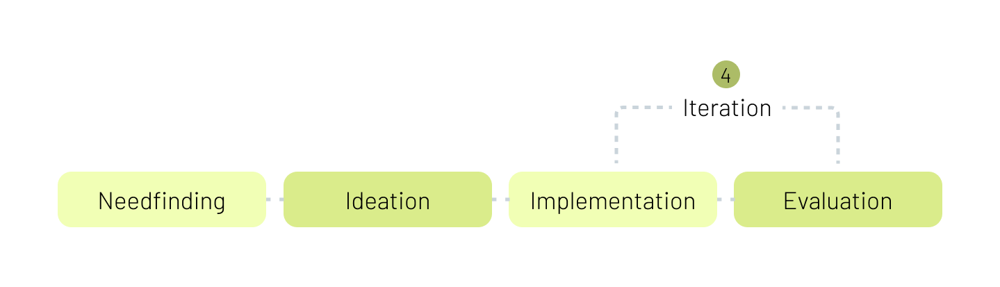
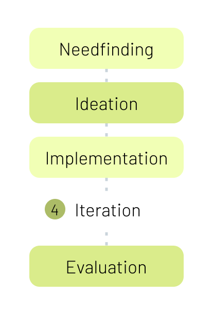
User Analysis
Personas
Jenny
Goal: Write factual articles for her school newspaper
Pain Points: -
Jenny finds breaking news stories from Twitter and is afraid of misinformation
-
Her friends send her stories over Instagram without sources

Mike
Goal: Promote critical race theory in schools
Pain Points: -
Mainstream media has depicted critical race theory in an inaccurate and negative light
-
History classes are often whitewashed and do not discuss the implications of white supremacy
Task Analysis
Our team created 3 high-level tasks:
-
Introduce Fact Checking
-
Fact Checking a Tweet
-
Fact Checking an Infographic
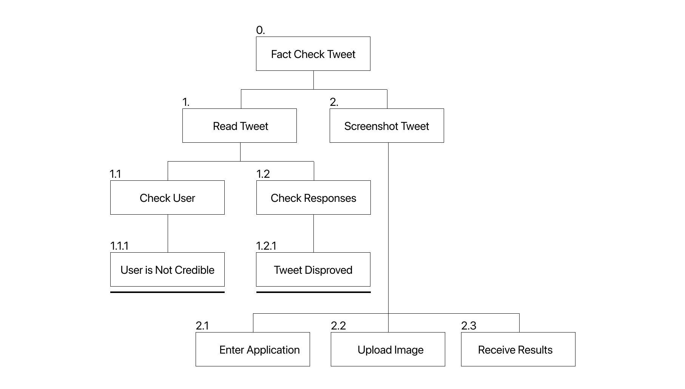
Design Iteration
Wireframes
{kind=link}
Final Iteration
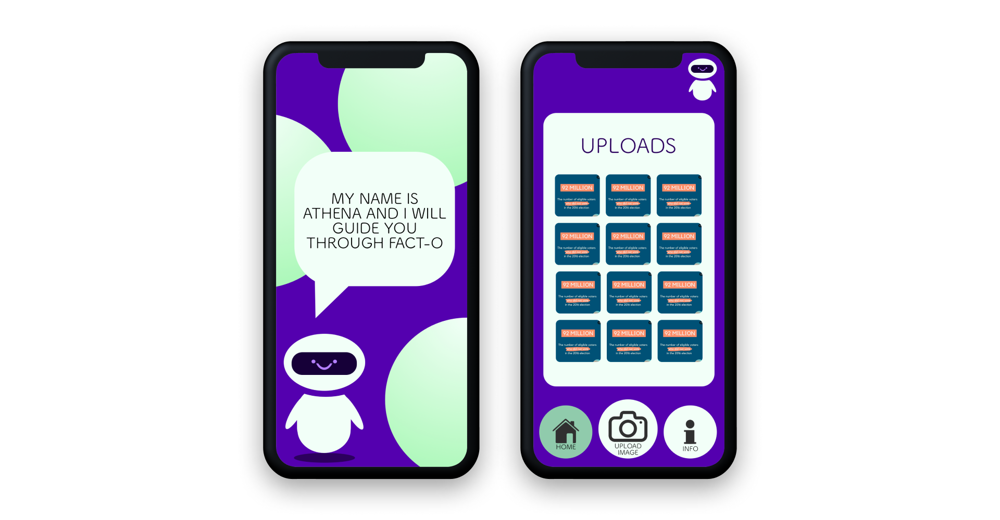
The Solution
Fact-O combats misinformation head-on while attracting the younger generation with bright colors and our robot avatar. Through our application, users enhance their media literacy and critical thinking skills.
Final Design Rationale
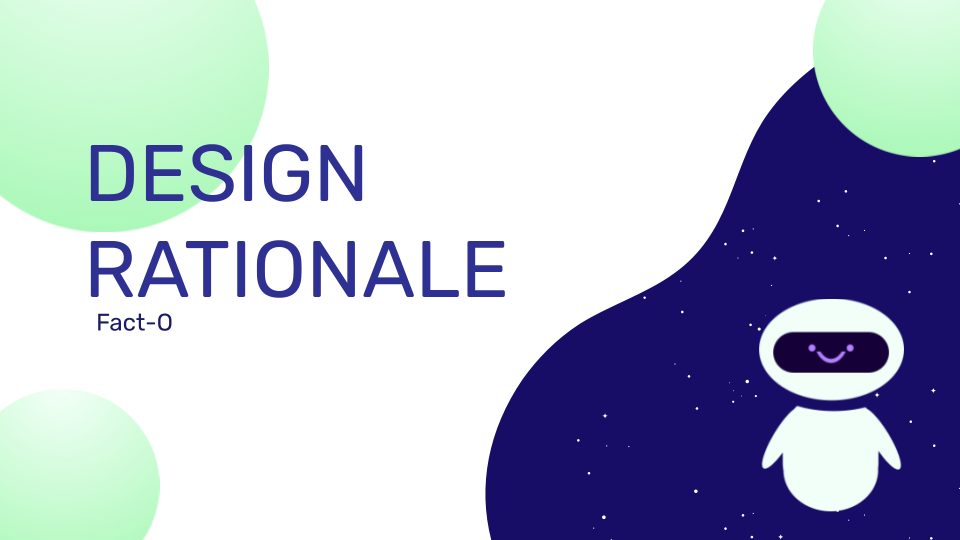
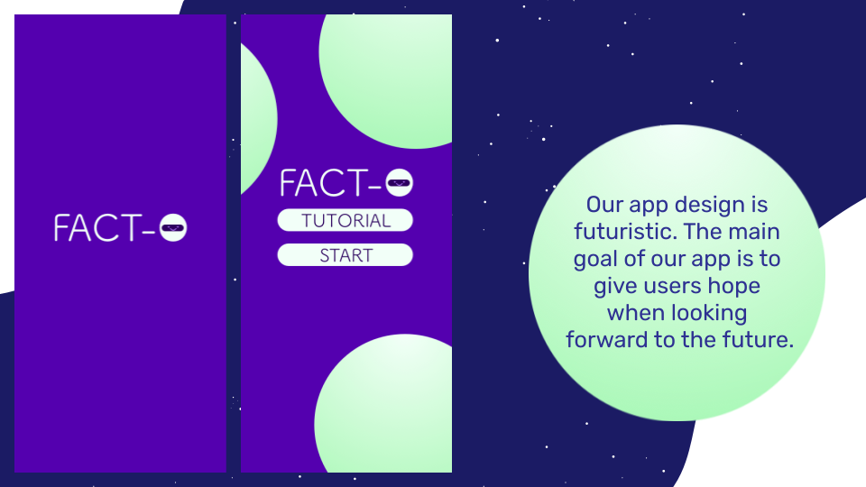
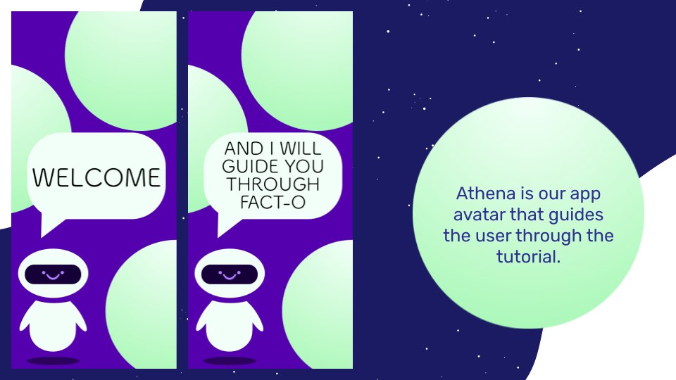
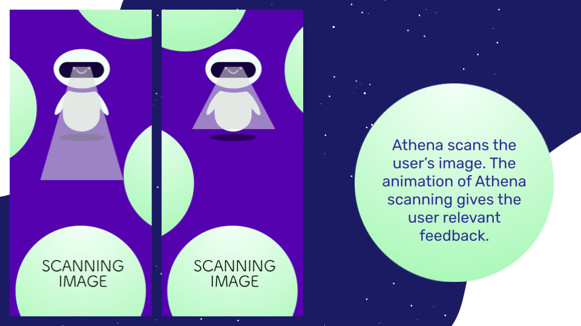
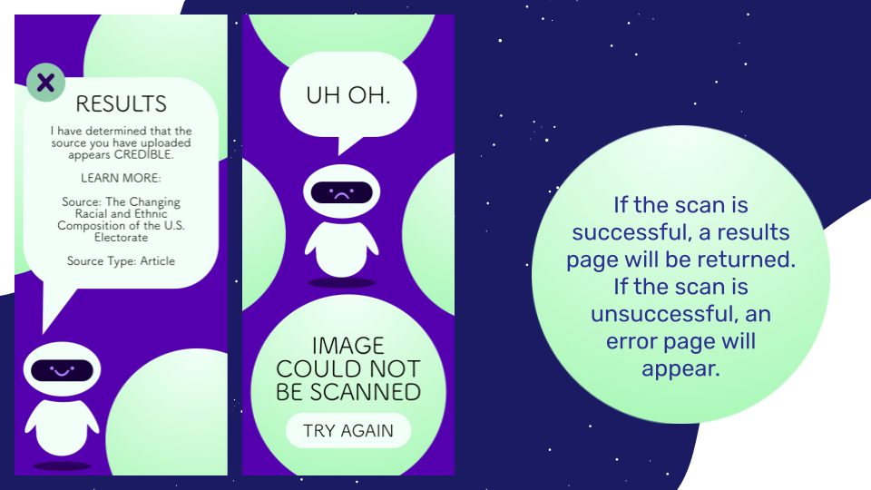
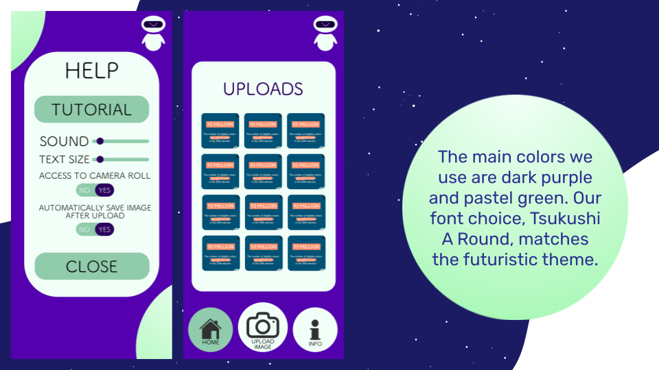